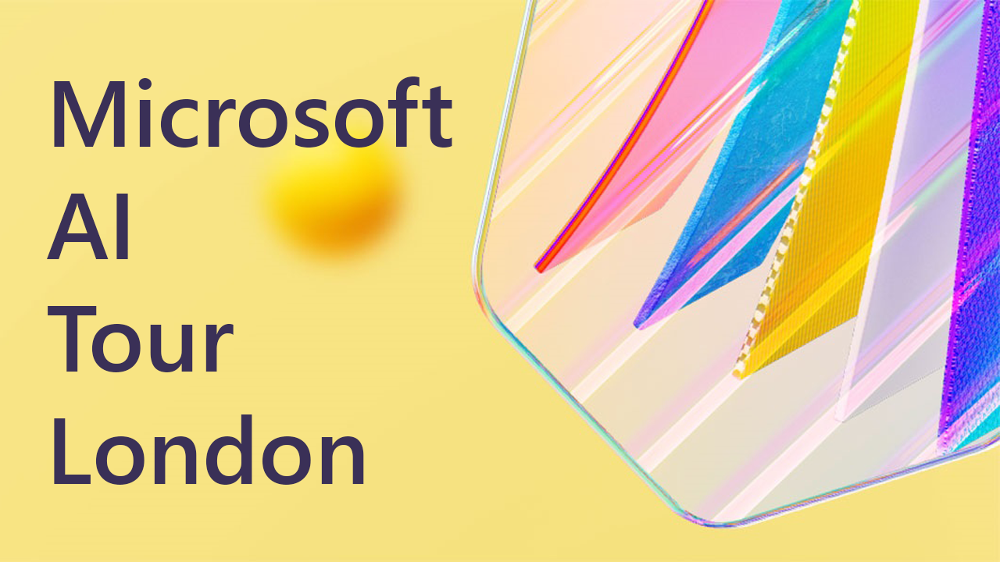

Microsoft AI Tour London 2024
Keynote with Satya Nadella & Jared Spataro
Introduction
Microsoft are leading in the new age of AI and Satya Nadella spoke about being in the United Kingdom for four decades and he has come to the UK over three decades and started with a breakout session with an Excel with VB demo and is now talking about the tech shift to AI. He spoke about that it is helpful to ground himself in what is the core driver, which was Moore's Law and knew many years ago that x86 would win over the PC and server and there is now the new Scaling Law with AI, which is an imperative law, just like Moore's Law which held true and every six months or so we have a doubling of capacity in AI.
The new currency of AI is dollars per watt of AI and a lot of the improvements come from better techniques in algorithms and it began in the early DNN era in the 2010s and on to 2019 with LLMS. Computer interface is fundamentally changing and with a text interface everything is going to change and increased reasoning capabilities which came make sense of information and you can feed it more context and memory and are building out a rich AI or agentic world, some of these agents will be personal agents and others will give context within a team or across an organisation that augment everything we do using the scaling laws as an underlying force.
Microsoft are translating this into the most important mission they have which is to empower people to do things they couldn't do previously. Some of the most seminal technologies were created in in the UK during the industrial revolution and will we see that flourishing of technology, helping companies become more efficient and improve healthcare outcomes. Microsoft are building three platforms to achieve this with is Copilot, Copilot & AI stack to build your own agents and Copilot devices which are a new set of devices with AI.
Copilot
With Copilot when you start with this rich agentic world you need a user interface, and Copilot is the UI for all of this AI and even for AI that is acting autonomously if needs to raise exceptions or ask permissions. Workflow is going to change thanks to Copilots and Microsoft launched something called Pages where can create new AI first artifacts which can be shared across organisations to work with AI and humans, so think with AI and work with colleagues to now have a cognitive amplifier with AI to collaborate with colleagues and get work done, chat is just one modality to get information but it also works across other modalities.
You can extend Copilot with a low-code, no-code way to build agents which are grounded with a rich set of data sources including database that includes all office information including who works for whom and who is related to a project and what are relationships between documents, emails and teams messages and are exposed with a Graph with Microsoft 365, it will also include data that has been collected from outside systems. If you want to build a field service agent you just need to instruct it to do this and give it the information it needs to then have a conversation with just like a regular Copilot conversation, you can create AI agents using Copilot Studio and can think of this like a new form of application you can create without having to wait for someone else to do this and is part of the Copilot and Copilot + PC ecosystem.
If you take elements such as sales and marketing, customer services, IT and HR help desks you can make improvements and help with customer satisfaction and reduce waste and costs. These tools are increasing value and reducing value and cognitive work is being improved at scale. This is happening in the UK across the board which is fantastic to see local Copilot examples such as those used by Clifford Chance with legal workflows that happen around M&A transactions and by using Copilot and Copilot studio that streamline this process and with Unilever has a lot of top-line marketing spent and they do creative briefs that need high fidelity but have created a fantastic tool to create high quality and in-depth creative briefs with AI. Microsoft and UK government have signed a five-year agreement to support the new era of digital of transformation in every segment of the government by putting this into the hands of civil servants to reduce drudgery and improve productivity. In the UK skills around AI has a monotonic increase around AI skills and has grown around 88% since 2019, the structural advantage of this can catapult the UK in terms of what it can do in the AI era.
Microsoft are excited about what is coming next with autonomous agents that you can create with Copilot Studio and Jared Spataro spoke about this where he mentioned how Copilot Studio can be used to create an autonomous agent to streamline a customer experience, they had people reading and parsing through emails to forward them on to the right person, so no an email comes in and the agent springs into action and parses out the email beyond the ambiguity of the email and gets the right industry standard terms and determines who should receive this email and them summarises the email and sends it to the right person to take the next step. The agent has been given a loose set of instructions to deal with messiness of human communication, but it is easy to create an agent like this with Copilot Studio which is programmed using natural language in the same way you would tell a colleague to do the task and then you set a trigger which would be to look for an email being received or a whole range of events to come in to get the agent going and then you can add knowledge which can be documents, SharePoint websites or even other line of business applications and then you can give it a set of actions such as pulling out relevant information or summarise what has been written and this scales. You can see the list of engagements of an Agent including which ones have been completed or in progress and these agents are always working on behalf of a company, and even though these agents are amazing sometimes they need human help, such as when someone has left the company it needs to escalate to someone else to know who the email should be forwarded to, this is done with a notification in Copilot with all the information where that person can then tell the agent who to contact instead. This process can help reduce admin overhead and lead time and act as an orchestration layer with a bunch of agents to streamline or automate processes no matter the industry and you create them in Copilot Studio and interact with them in Copilot. Satya Nadella then added that Copilot is evolving to become this organising layer for workflow and workflow agents that docs with Copilot with the context with individual work, teamwork and organisation work.
Copilot & AI Stack
Ultimately you want to have every layer to be available to every software developer to create a AI system of their own which is with the most comprehensive footprint with the best infastucure with UK West and UK South Azure regions to have the base infrastructure that is optimised for AI, working with providers of best AI silicon, liquid cooling and have fantastic partnerships on this layer and parlay this with best optimisations for training and inference to build your own Copilots. The best way to train or inference with AI is to have your data estate in order and want to be able to bring your data to the cloud and rendezvous with AI and bring in things such as your Oracle estate or Snowflake estate or anything else, you should be able to bring that to the cloud. On top of this Microsoft are building a cloud native infrastructure for data such as for SQL, Postgres or Fabric which is a first class analytics database build for the AI era, there is no such thing as an AI application that is not stateful and ChatGPT is one of the biggest customers of CosmosDB, so when you build an application you need to build a data estate that is robust.
Microsoft are also building an application server, Satya has been talking about AI and .NET and are back again with a new app server era for cloud native applications with containers and app services are all still needed in the AI era, for ChatGPT there is regular compute with app servers. There is also a new AI app server which has the broadest AI selection including OpenAI and latest frontier models and open-source models such as Meta and Mistral AI and once have broadest set of models then you can do supervised fine tuning of models to build these into your own applications and have tools for RAG and on top of this have services to ensure you have guardrails around your application. You also make sure have the best toolchain and Microsoft is excited about tools they build with developers such as VS Code and GitHub Copilot and there is a new frontier about what developers can do with this toolchain and use AI to get the next level of optimisation.
AI is being used to build better AI tools to build AI tools to improve what you can do with AI. There are over 3.7 million developers in the UK on GitHub and thanks to GitHub Copilot can get a repository and clone it and get something done in a finite time. Satya has met with many partners to use machine learning and AI along with using Azure speech services to empower people at crucial times and how to transform processes with AI tools that have also helped transform applications or build digital twins to improve sustainability along with how to think about automation with AI first principles. The rate of diffusion of AI that has been seen to already created sophisticated applications has been great to see.
Copilot Devices
Copilot + PCs were released with a CPU, GPU and NPU all available at the edge and scaling laws have worked super well on the cloud but on the edge will have innovations and enhancements to create one continuous fabric, so you won't have a Copilot + PC on its own but in conjunction with what is happening in the cloud to create the most intelligent Windows PCs. These features include improved Windows Search to find documents or photos, Click to Do, Super Resolution in Photos, generative fill and erase and Windows Recall to instantly find what you have seen on your PC. It is exciting to see the things is to see people will build for the CPU, NPU and GPU world and is the type of application development that is coming to life to build novel new applications.
Conclusion
Satya ended by talking about trust in the technology being core to the diffusion of this technology as if you don't trust it you won't use it. Microsoft have core principles for a secure future initiative, privacy principles and responsible AI principles for trustworthy AI. Microsoft have concrete set of principles but not only just commitments but also what are the capabilities they are building to make progress on these such as with Security including data security and governance for AI along with AI security posture management and threat protections, compliance management for AI regulations and standards plus prompt shields to block attacks. There are also principals for privacy with assessments, consent management, data encryption and confidential computing along with for safety with groundedness detection and correction, filters for harmful inputs and outputs and evolutions to assess the quality and safety of AI outputs.
Microsoft have to think about adversarial attacks not just bugs such as prompt injection and need to be able to simulate these attacks and things they need to do about privacy and safety around latest and greatest models and know that AI can hallucinate so can use AI to measure groundedness of output is being build into the platform so that developers and those who use products created by developers have trust and technology has to translate into real-world impact to drive economic surplus and growth.